Instalasi & Konfigurasi
Untuk Windows
- Link : https://laravel.com/docs/9.x/installation#getting-started-on-windows
- kita install larave lewat composer
- cek dulu versi php : php -v
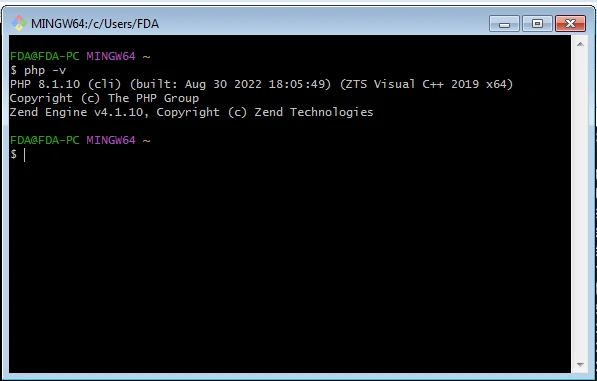
Install Composer
- Link : https://getcomposer.org/doc/00-intro.md#installation-windows
- Klik Composer.Setup.exe
- Pilih Install for all users
- Tidak perlu ceklist
- kita aka diarahkan untuk menggunakan PHP yang akan kita gunakan
- jika sudah punya XAMPP akan diarahkan otomatis ke XAMPP
- kita kosongkan untuk proxy
- Klik Install
- kalo sudah katanya, kalo mau nyoba buka command promt yang baru untuk menggunakan composer
- Klik Finish
- Cek versi composer : composer -V
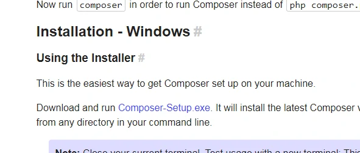
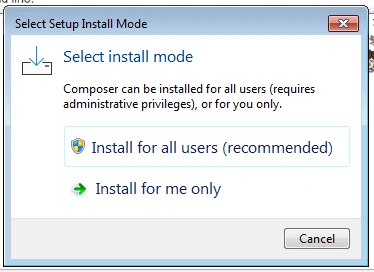
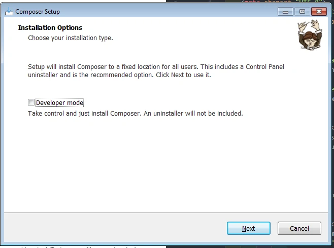
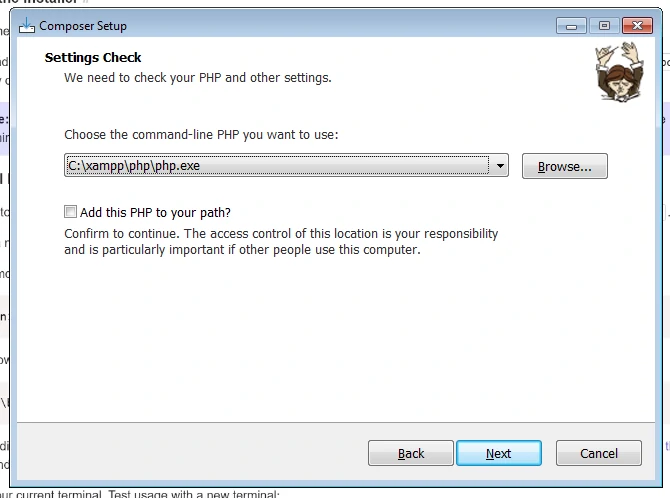
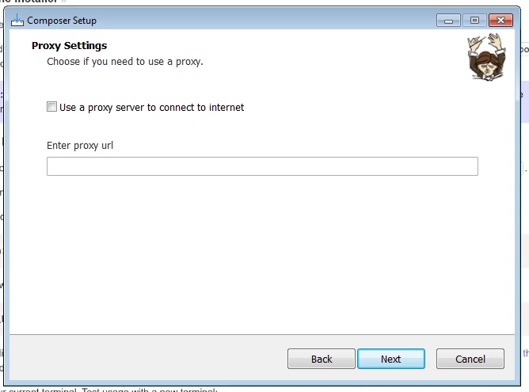
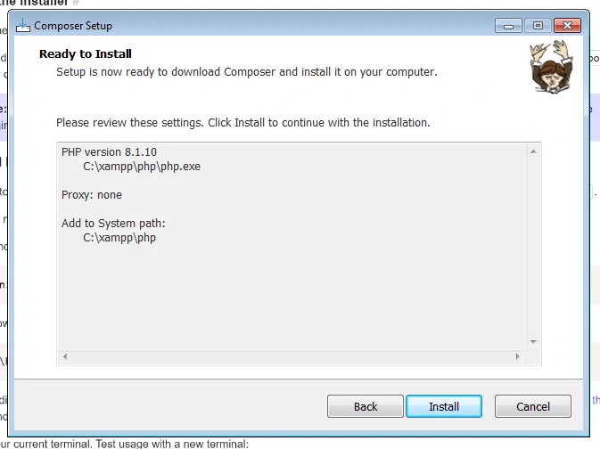
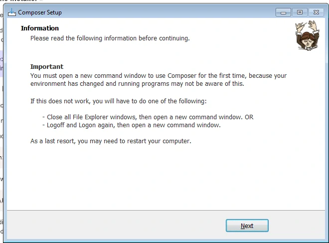
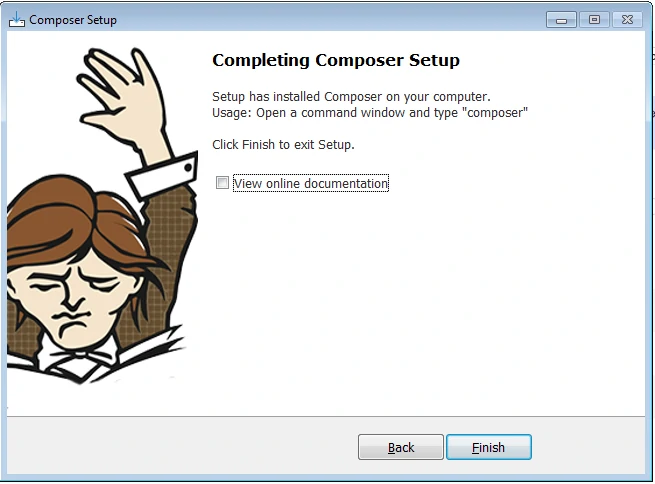
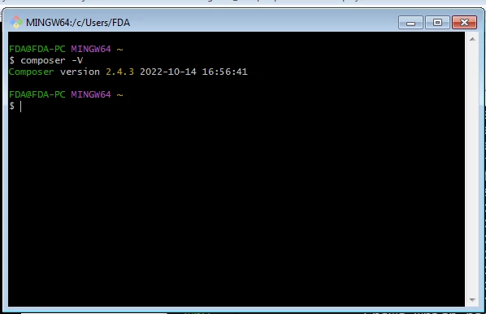
Install laravel lewat composer
- Tinggal masukan perintah ini di cmd
- jika sukses maka tampil seperti ini
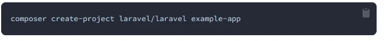
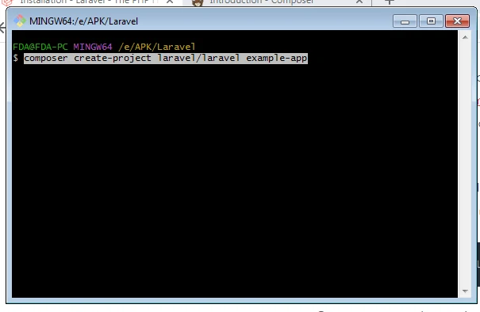
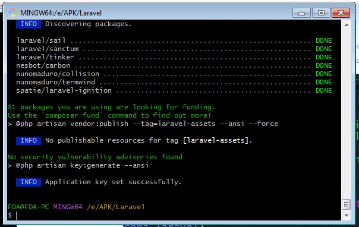
Mencoba laravel
- Kita bisa menjalankan local development server punyanya laravel
- ketik : php artisan serve
- akan dijalankan sebuah laravel development server yang bisa kita akses dengan cara mengetikkan : http://127.0.0.1:8000, dibrowser kita
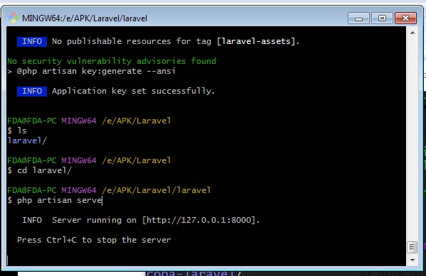

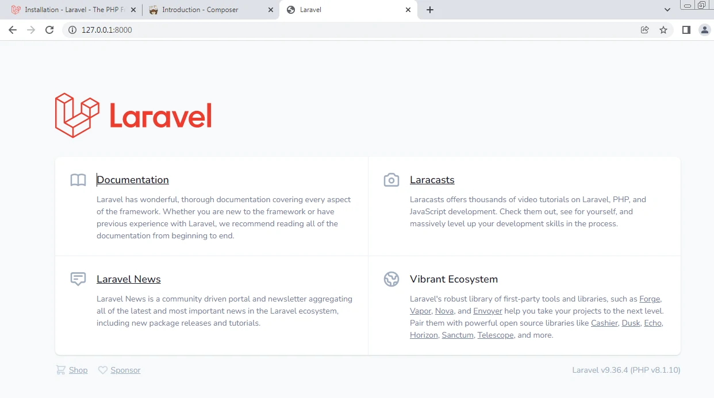